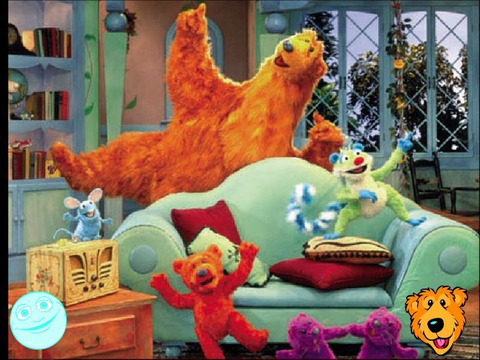

Bear in the Big Blue House Screensaver


An interactive screensaver! Click on Bear to let him sniff you, and click on Luna to exit the screensaver.
Note: This is a 16-bit program and requires special programs to install on 64-bit Windows, such as otvdm.
DOWNLOAD
 .exe file zipped (3.86 MB)
.exe file zipped (3.86 MB)